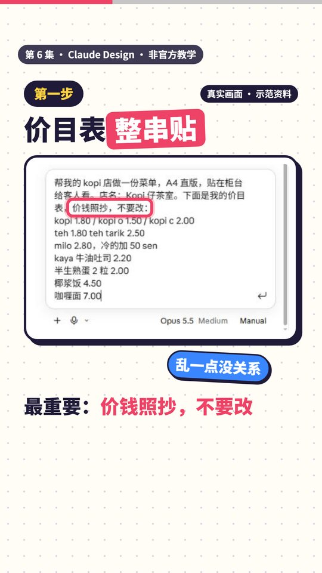
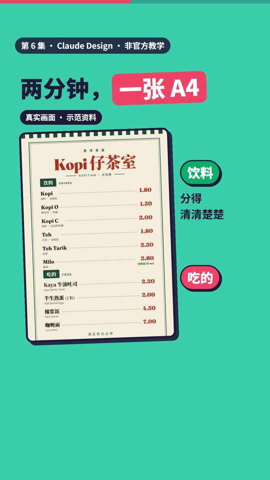
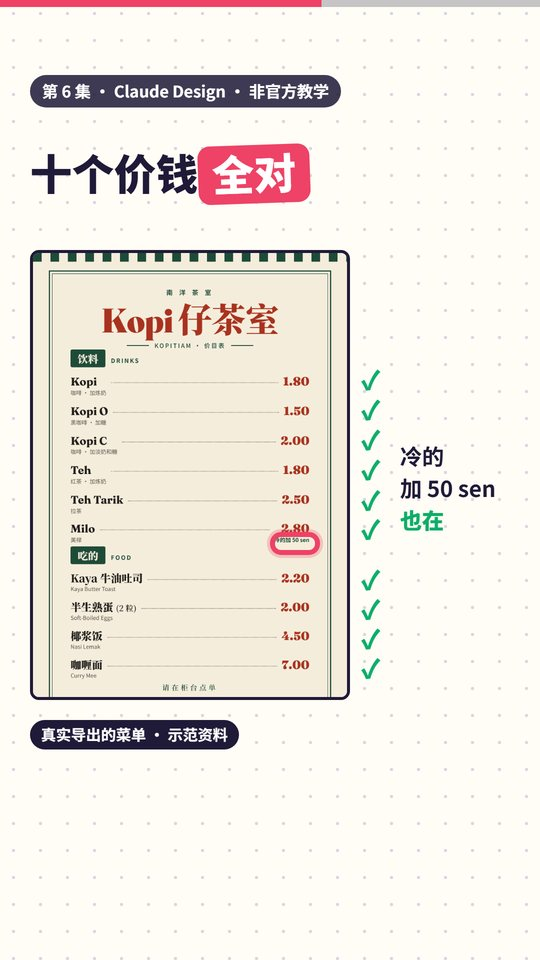
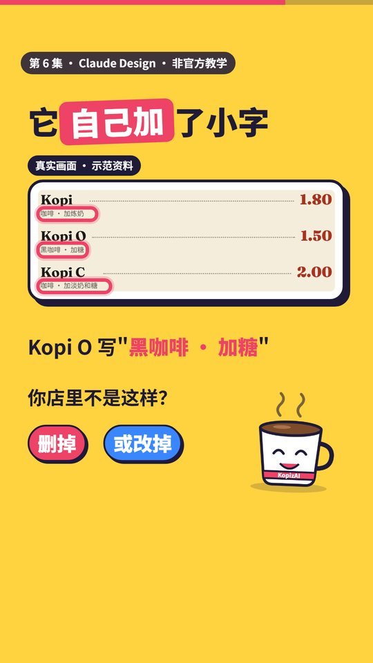
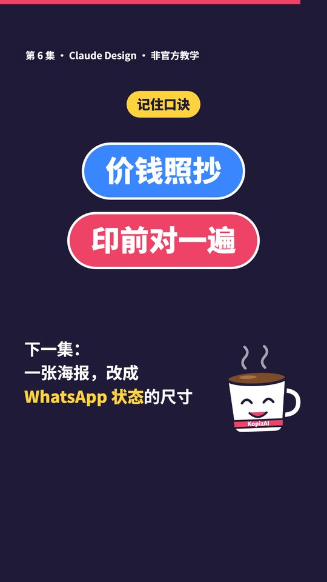

第 6 集 · 帮 Kopi 店做一份菜单
一句话： 价目表整串贴给 Design，加一句"价钱照抄，不要改"；印之前，自己对一遍价钱，再看它自己加了什么。
对照官方文档和真实界面核对日期：2026-11-13 ｜ 时长 43 秒 ｜ 非官方教学
跟着做
第一步：打开 Design，把价目表整串贴进去（视频 00:08）
左边栏点 Design，在 "Make something new" 里点 Design 卡片，然后在输入框里讲清楚要什么，再把价目表整串贴进去。格式乱一点没关系（斜线、空格、"冷的加 50 sen"这种写法都行）。
最重要的一句：价钱照抄，不要改。
可以直接复制，改成你自己的店名和价钱：
帮我的 kopi 店做一份菜单，A4 直版，贴在柜台给客人看。店名：Kopi 仔茶室。下面是我的价目表，价钱照抄，不要改：
kopi 1.80 / kopi o 1.50 / kopi c 2.00
teh 1.80 teh tarik 2.50
milo 2.80，冷的加 50 sen
kaya 牛油吐司 2.20
半生熟蛋 2 粒 2.00
椰浆饭 4.50
咖喱面 7.00
（店名和价钱是我们编的示范资料。）

结果：两分钟左右，一张 A4 菜单（视频 00:16）
我们这次大约两分钟就出来了：米色底、墨绿框，分成"饮料"和"吃的"两区。

第二步：印之前，一个个对价钱（视频 00:22）
导出来（Share → Export → PNG 或 PDF，见第 4 集）之后，对着你的价目表一项项对。我们这次十个价钱全对，"冷的加 50 sen"也在。全对也要对：那是你的钱。

第三步：看它自己加了什么（视频 00:27）
Claude 会自己加小字。我们这次它在饮料下面加了中文说明（Kopi O 写"黑咖啡 · 加糖"、Kopi 写"咖啡 · 加炼奶"），吃的下面加了英文或马来名（Nasi Lemak、Curry Mee），还加了"请在柜台点单"。它在回复里也说了它加了这些。
你店里的做法不一样，就删掉或改掉（直接在画布上改，或者跟它说，见第 2 集）。

口诀
价钱照抄，印前对一遍。

时间点
| 时间 | 内容 |
|---|---|
| 00:00 | 做菜单最怕价钱打错 |
| 00:04 | 1.80 印成 1.08（示意） |
| 00:08 | 价目表整串贴进去，加一句"价钱照抄，不要改" |
| 00:16 | 两分钟左右，一张 A4 菜单 |
| 00:22 | 一个个对：十个价钱全对 |
| 00:27 | 它自己加了小字，不对就删掉或改掉 |
| 00:34 | 口诀，下一集预告 |
顺便知道
- 如果你的账号里有设计系统（Design System），它可能会先问你要不要用那套颜色和字体。我们选了它推荐的"不用，做南洋茶室风"。
- 官方说明建议讲清楚做什么、给谁看、什么最重要；拿不定主意可以叫它出 2–3 个版本。
- 官方说明没有讲价钱或文字会不会抄错，所以这里只说"印之前对一遍"，不说它常常出错。
来源：Claude 帮助中心《Get started with Claude Design》，以及 2026 年 11 月 claude.ai 的实际操作 https://support.claude.com/en/articles/14604416-get-started-with-claude-design